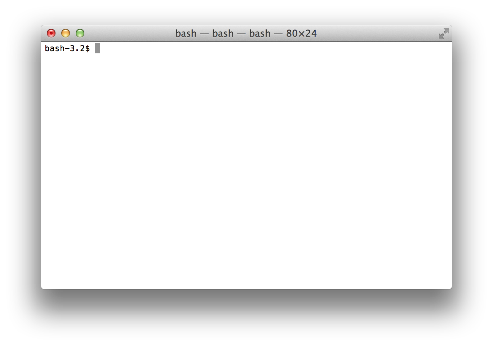

Welcome to Saturday Academy
We are Collin Ruffenach & James Pozdena
We are going to need a few tools to help you start programming.
A lot of programming is editing text. There are hundreds of different text editing applications specifically made to write software with. We are going to use Textmate 2.0 which was recently open sourced.
We should probably find something easy to click on that would be a chatroom for all of us.
Terminal App
